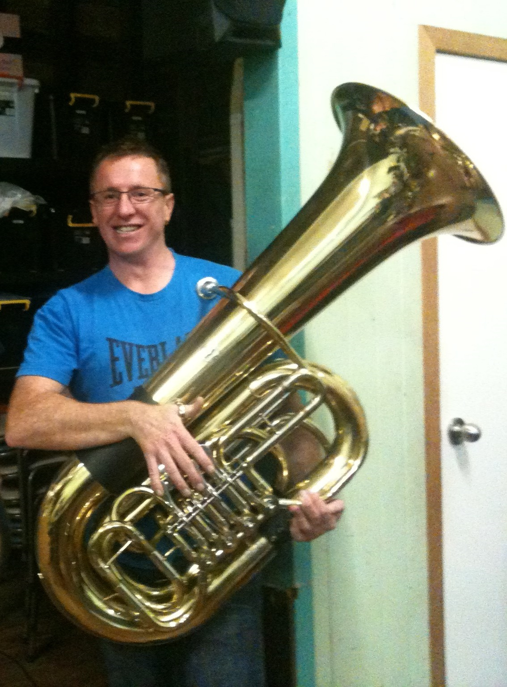

James Morrison
The name “James Morrison” is known throughout the world for his sheer brilliance as a jazz musician and an all round entertainer.
“Man, James Morrison can play!”
Read more...
Adam Lopez
Opera trained and two time Guinness World Record Holder for singing the highest vocal note by a male singer! (C Sharp in the 8th Octave - a semi-tone higher than a Grand Piano).
Read more...
David Hudson
David Hudson’s life reflects his love and belief in Aboriginal culture. He comes from the Ewamian (oo-rah-min)/Western Yalanji (people of the north east coast of Australia) so it is natural that he makes his home in Cairns in the midst of the beautiful reef and rainforest.
Read more...
Domenico Taraborrelli
Domenico is one of Brisbane’s most experienced and versatile multicultural entertainers. He has performed in almost every possible style since he commenced his musical career in 1971 at age 4.
Read more...

Stewart Dawes
Stewart Dawes started his music career at an early age before eventually finding his way into the Army Reserve as a Tuba Player. Now splitting his playing time between tuba and Bass, he plays in local Brisbane bands in his spare time.
Read more...
Jennifer Bradstreet
Jennifer Bradstreet completed a Bachelor of Music with Honours at the Sydney Conservatorium, before taking up a summer scholarship at St Andrews and Oxford in the UK, and then moving to London in 2010. She became a student at the Royal College of Music under British flautist Susan Milan, and graduated with a Postgraduate Diploma of Performance in 2011.
Read more...
Leah Li
Townsville based harpist Leah Xiang Li enjoys a diverse career as an orchestral and chamber musician, soloist, instrumental teacher and primary school language teacher.
Read more...
Richard McIntyre
The name “James Morrison” is known throughout the world for his sheer brilliance as a jazz musician and an all round entertainer.
“Man, James Morrison can play!”
Read more...
Stefan Cassomenos
Melbourne pianist, conductor and composer Stefan Cassomenos gives regular solo recitals throughout Australia, and has appeared as a soloist in Europe and Asia.
Read more...
Yoshika Masuda
Cellist YOSHIKA MASUDA is fast emerging as one of the most unique and versatile artists of his generation. Praised by the press for possessing a sound that is ‘ravishing’, ‘vibrant’ and ‘sensitive’, his recent Tokyo debut garnered critical acclaim.
Read more...